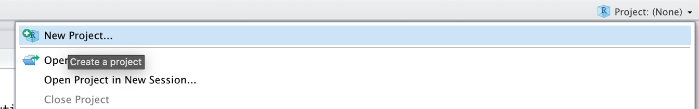
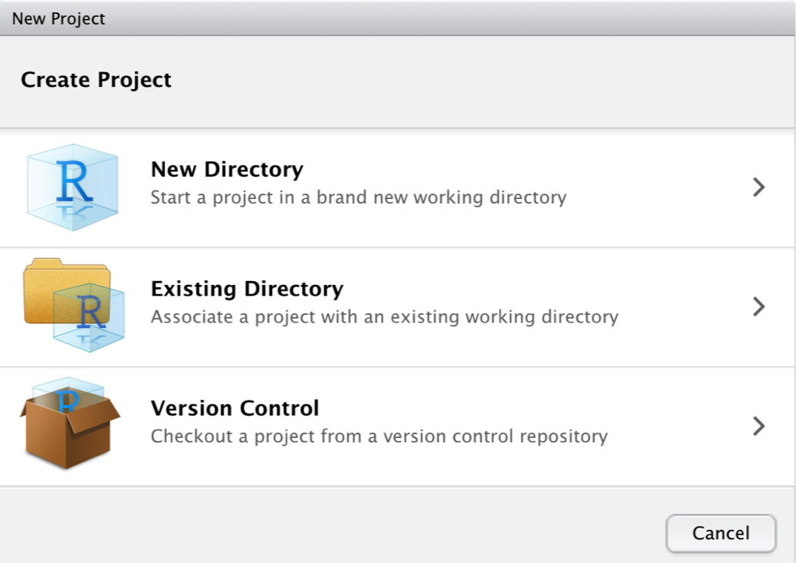
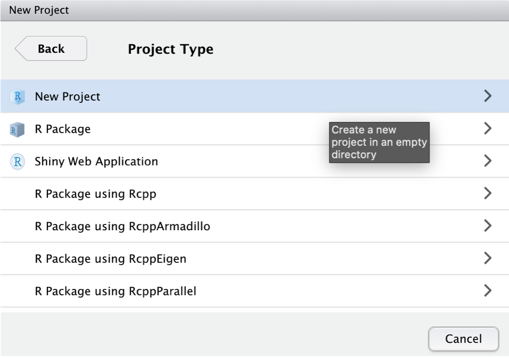

报告 & 可重复性
在 前面的章节中，我们讨论了在 R 中进行 Meta 分析的各种技术、方法和策略。然而，在实践中，运行统计分析只占整个 Meta 分析“过程”的一小部分。“在实际应用中”，常见的情况是：
我们在 R 代码中发现错误，因此不得不修改一些内容后重做部分分析。
合作者或审稿人建议使用不同的方法或模型，或者进行额外的敏感性分析。
我们需要将部分分析委托给我们的合作者之一，并且必须将我们工作的当前状态发送给她。
我们不得不停止我们的项目一段时间，这意味着当我们恢复工作时，我们已经忘记了很多东西。
我们想与项目合作者分享我们的分析结果，但他们不懂 R，也没有安装 R Studio。
这只是一些场景，但它们说明了在 R 中进行 Meta 分析时，可重复的工作流程对您和您的合作者都有好处。追求可重复性也是开放科学实践的基石。完全可重复的 Meta 分析尽可能透明地向他人展示我们是如何得出结果的。
R Studio 是创建可重复工作流程和促进合作的最佳工具。在本章中，我们将介绍三种工具来重现、报告和传播我们的分析：R 项目、R Markdown 和开放科学框架。
使用 R 项目
开始分析的一个好方法是首先在 R Studio 中设置一个 R 项目。R 项目在您电脑上的一个文件夹中创建一个新的环境。在这个文件夹中，保存了您分析所需的所有数据和 R 代码。在 R 项目中进行分析意味着我们创建的所有对象都临时保存在项目环境中，并且下次我们重新打开它时可以访问。要创建一个新的 R 项目，我们可以点击 R Studio 窗口右上角的 R project 字段，然后在下拉菜单中点击 New Project…。
然后我们创建一个 New Directory，即电脑上的一个新文件夹，它将成为项目的工作目录。

然后，我们点击 New Project。

我们给我们的新项目命名为“Meta-Analysis Project”。项目文件夹将存储在 ~Documents/R 中。
点击 Create Project 后，R 项目就设置好了。R 项目的一个很棒的特性是我们不必使用绝对路径来引用我们想要的文件。我们只使用文件名，或者，如果文件在一个（子）文件夹中，则使用文件夹和文件名。假设我们将我们的数据集 data.xlsx 存储在子文件夹“data”中。使用 {openxlsx} 包（第 @ref(data-prep-R) 章），我们可以使用相对路径导入数据集。
read_excel("data/data.xlsx")使用 R Markdown 编写可重复的报告
Markdown 是一种用于文本格式化的简单标记语言。R Markdown [@xie2018r] 是 Markdown 的扩展，可以轻松地在一个文档中组合纯文本、R 代码和 R 输出。这使得 R Markdown 成为一个非常有用的报告工具。使用 R Markdown，我们可以创建包含我们分析中使用的所有代码、代码产生的输出的 HTML 或 PDF 文件，并且可以添加有关我们在每个分析步骤中所做工作的详细信息。
在 R Studio 中构建 R Markdown 文件非常容易。我们只需要点击 R Studio 窗口左上角的带有绿色“加号”的白色符号。然后，在下拉菜单中，我们点击 R Markdown…。
在定义了新的 R Markdown 文档的名称后，它应该会出现在 R Studio 窗口的左上角。
该文件已经包含了一些示例内容，我们可以删除这些内容，除了前六行：
---
title: "Analysis"
author: "Author Name"
date: "10/16/2020"
output: html_document
---这部分是所谓的 YAML 头部。它控制文档的标题、作者、日期和导出格式。我们为文档选择的输出格式是 html_document，这意味着文档在渲染后将导出为 HTML 页面。
所有的 _R Markdown 文档_都由两部分组成：纯 Markdown 文本和所谓的 R 代码块，以灰色显示。我们不会详细介绍 R Markdown 文档中的文本部分是如何格式化的，但是有一个在线备忘单，这是一个开始学习 Markdown 语法的绝佳资源（这应该只需要大约二十分钟）。另一方面，R 代码块只是包含我们通常会在控制台中输入的所有代码。通过点击文档右上角的 Insert 字段，我们可以添加新的代码块。可以通过点击每个代码块上方的小绿色三角形来运行代码。
完成文档编写后，我们可以通过点击左上角的 Knit 符号将其导出为 HTML、PDF 或 MS Word 文档。这会渲染文档，包括所有文本、代码和输出，并以定义的格式导出它。最终文档会自动保存在我们的项目文件夹中。

OSF 仓库
开放科学框架 (OSF) 是一个开源在线平台，旨在促进研究中的协作和可重复性。OSF 包括一个在线仓库，研究人员可以在其中存放他们的研究材料，以进行协作并使研究过程的所有步骤（更）透明。OSF 是开放科学运动的先锋，该运动在过去十年中聚集了很大的势头。
鼓励所有 Meta 分析师通过公开访问他们收集的数据和用于分析的 R 代码，使其研究和分析过程对公众透明。OSF 是一个很好的工具来做到这一点——您为自己创建的所有仓库默认都是私有的，您可以决定是否、何时以及想要公开什么。下面，我们将向您展示如何在 R 中设置 OSF 仓库，上传和下载文件，以及如何添加合作者。
访问令牌
要开始使用 OSF，我们首先必须在 网站 上创建一个个人帐户。创建帐户后，我们还必须生成一个访问令牌，以便我们可以使用 R 直接操作我们的仓库。要获取访问令牌，我们必须导航到 Profile > Settings > Personal access tokens。在那里，我们点击 Create token。

然后，在 Scopes 下，我们选中所有复选框，然后再次点击 Create token。之后，我们的个人访问令牌应该会出现。我们复制令牌并保存以供以后使用。
{osfr} 包 & 身份验证
为了直接通过 R 访问我们的 OSF 仓库，我们可以使用 {osfr} 包 [@osfr]。在我们使用此包的功能之前，我们首先必须使用我们的访问令牌进行身份验证。为此，我们使用 osf_auth 函数，为其提供我们刚刚收到的访问令牌（下面显示的令牌是虚构的）：
library(osfr)
osf_auth("AtmuMZ3pSuS7tceSMz2NNSAmVDNTzpm2Ud87")仓库设置
使用 {osfr}，我们现在可以使用 R 初始化 OSF 仓库。假设我们正在进行一个新的 Meta 分析项目，并且我们想要将我们的数据以及 R Markdown 脚本上传到 OSF 仓库。仓库的名称应为“Meta-Analysis Project”。
要创建一个新的仓库，可以使用 osf_create_project 函数。我们将新的 OSF 仓库保存在 R 中，命名为 meta_analysis_project。
meta_analysis_project <- osf_create_project("Meta-Analysis Project")使用 osf_open 函数，我们可以访问新创建的在线仓库：
osf_open(meta_analysis_project)
现在仓库已经创建，我们可以继续向其中添加 组件。在 OSF 中，组件的工作方式类似于计算机上的文件夹。假设我们要创建两个组件：一个用于我们的数据集，一个用于我们的 R Markdown 脚本。为此，我们可以使用 osf_create_component 函数。我们必须为该函数提供 R 仓库对象 (meta_analysis_project)，然后设置新组件的标题。
scripts <- osf_create_component(meta_analysis_project,
title = "Analysis Scripts")
datasets <- osf_create_component(meta_analysis_project,
title = "Datasets")当我们现在转到仓库的在线页面时，我们看到这两个组件已被添加。
上传 & 下载
要将数据上传到 OSF 仓库，我们可以使用 osf_upload 函数。该函数要求我们指定要将文件添加到哪个组件，以及应上传的文件的路径。假设我们要上传一个名为“Analysis.rmd”的 R Markdown 脚本，该脚本当前保存在我们的 R 项目子文件夹“scripts”中。要上传，我们可以使用以下代码：
osf_upload(scripts, "scripts/Analysis.rmd")要查看文件是否已成功上传，我们可以使用 osf_ls_files 函数访问组件的内容。
osf_ls_files(scripts)## # A tibble: 2 x 3
## name id meta
## <chr> <chr> <list>
## 1 Analysis.rmd 1db74s7bfcf91f0012567572l <named list [3]>我们在输出中看到上传成功。要下载文件，我们可以从 osf_ls_files 函数输出中选择一行，并在 osf_download 函数中使用它，将文件下载回我们计算机上的项目文件夹中。
osf_download(osf_ls_files(scripts)[1,])协作、开放访问 & 预注册
在 OSF 仓库网站上，我们也可以在 Contributors 字段下添加合作者。
在任何时候，都可以通过点击网站右上角的 Make Public 按钮来使仓库公开。
在第 @ref(analysis-plan) 章中，我们讨论了分析计划和预注册是高质量 Meta 分析的重要组成部分。OSF 可以非常方便地为我们的项目创建一个公开访问的预注册。我们只需点击顶部的 Registrations 按钮，然后创建一个 New registration。这会将我们带到 OSF Registries 网站，我们可以在其中提供有关我们计划研究的详细信息，包括我们的分析计划。
在指定了所有必需的详细信息后，可以注册该研究。这会创建一个注册条目，可以通过唯一的 ID 访问（例如 osf.io/q2jp7）。完成注册后，无法再更改既定的搜索计划、假设和/或分析策略。
\[\tag*{$\blacksquare$}\]